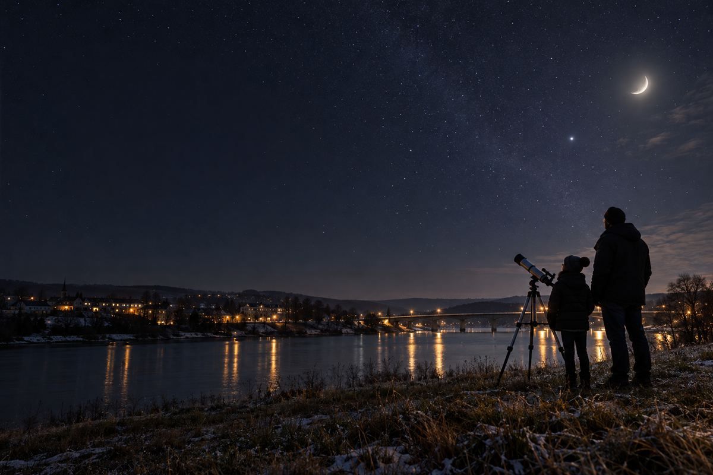

あおば天文クラブ
星空観察会（案）
12月5日（土）18:30〜
あおば川の河川敷（北橋のたもと）
雨・くもりは中止
参加のしかた・開催要項へ※1画面目の画像はイメージです（実際の会場や星の見え方ではありません）
見るもの
冬の星座
月
木星
※絵はイメージです
持ち物
- あたたかい服
- 懐中電灯赤いセロハンをつけてね
子どもは大人と一緒に
申し込み・参加のしかた
- 申し込み
- 確認中
- 参加費
- 確認中
- お問い合わせ
- 確認中
開催要項
- 催し
- 星空観察会（案）
- 団体名
- あおば天文クラブ
- 日時
- 12月5日（土） 18:30〜
- 場所
- あおば川の河川敷（北橋のたもと）
- 見るもの
- 冬の星座、月、木星
- 持ち物
- あたたかい服・懐中電灯（赤いセロハンをつけてね）
- 参加の条件
- 子どもは大人と一緒に
- 中止
- 雨・くもりは中止
- 参加費
- 確認中
- 申し込み
- 確認中
- お問い合わせ
- 確認中